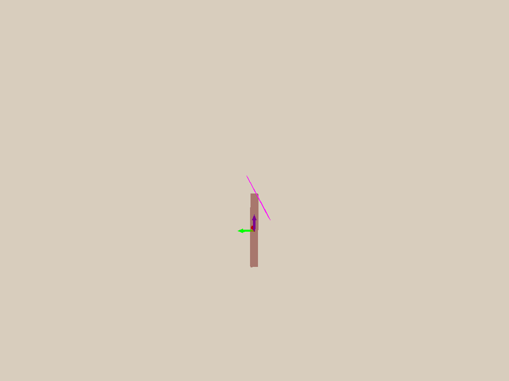

Agenda
Recall: Learning Objective of RL
- Given an MDP, find a policy $\pi$ to maximize the expected return induced by $\pi$
- The conditional probability of trajectory $\tau$ given $\pi$ is \[ \begin{aligned} \text{Pr}(\tau|\pi) & = \text{Pr}(S_0=s_0)\prod_t\pi(a_t|s_t)P(s_{t+1}|s_t,a_t)\text{Pr}(r_{t+1}|s_t,a_t)\\ \end{aligned} \]
- RL Objective: $\max_\pi J(\pi)$ \[ \begin{aligned} J(\pi) & = \bb{E}_{\tau\sim\pi}[R_1+\gamma R_2+...] \\ & = \sum_{\tau}\text{Pr}(\tau|\pi)(r_1+\gamma r_2+...) \\ \end{aligned} \]
Concept of Model-based RL
RL with Environment Model
- Model-free RL
- Learn policy from collected experience through policy gradient
- Learn value function through TD(DQN) or MC(PPO)
- In model-free reinforcement learning, transition dynamics $P(s_{t+1}|s_t,a_t)$ and reward function $R(r_{t}|s_t, a_t)$ is unknown and we do not attempt to learn it
- Model-based RL
- Learn/build model of environment from experience
- Utilize the model of environment to get (or improve) policy(or value)
Model-free RL and Model-based RL
- Model-free RL
- Model-based RL
Concepts in Model-based RL
- Rollout: predict a short trajectory $s_1, s_2, ..., s_T$. If we start at $s_0$ and execute $a_0, a_1, ..., a_{N-1}$ sequentially using environment dynamics
- Search: takes a model as input and produces or improves a policy by rollouts with the modeled environment
- Model-based value optimization:
-
Model-based policy optimization:
model $\xrightarrow[]{}$ policy
experience $\xrightarrow[]{\text{learning}}$ model
$\xrightarrow[]{\text{search}}$ policy
model $\xrightarrow[]{}$ simulated trajectories
$\xrightarrow[]{\text{backups}}$ value$\xrightarrow[]{\text{}}$ policy
Advantage of Model-based RL
- Higher sample efficiency, which is crucial for real-world RL applications such as robotics
- Better learned representations (sufficient to predict dynamics) which may yield higher performance
- Enabling the use of search algorithms without access to the real dynamics for better performance
Models of the Environment
What is a Model
- A model $M$ is a representation of an MDP parameterized by $\eta$ (eta)
- Usually a model $M$ represents the dynamics and reward functions \[ s_{t+1} \sim P(s_{t+1}|s_t,a_t) \\ r_{t} \sim R(r_{t}|s_t, a_t) \]
- Typically we assume conditional independence between state transitions and rewards \[ P(s_{t+1}, r_{t}| s_t, a_t) = P(s_{t+1}|s_t,a_t) R(r_{t}|s_t, a_t) \]
Perfect Model Without Learning
- Games: Go, the rule of the game is known
- Simulated Environment: Inverted pendulum, kinematics and dynamics can be modeled using physics 
Learning the Model
- Goal: learn model $M_{\eta}$ from collected experience $\{ s_0, a_0, r_0, \cdots, r_{T-1} \}$
- The simplest way is to consider it s a supervised learning problem \[ s_0, a_0 \longrightarrow r_1, s_2 \\ s_1, a_1 \longrightarrow r_2, s_3 \\ \vdots \\ s_{T-1}, a_{T-1} \longrightarrow r_{T-1}, s_{T} \]
- Learning $s, a \longrightarrow r$ is a regression problem
- Usually learning $s, a \longrightarrow s'$ is a density estimation problem. It can also be formulated as a regression problem
- Pick a loss function, e.g., mean-squares error, KL divergence, to optimize model parameters that minimize the empirical loss
Examples of Model Parameterization
The model of the environment can be parameterized by different functions, for example:- Table Lookup Model
- Linear Expectation Model
- Linear Gaussian Model
- Gaussian Process Model
- Neural Network Model
Table Lookup Model
- Model is an explicit MDP for transition dynamics $P(s_{t+1}|s_t,a_t)$ and reward function $R(r_{t}|s_t, a_t)$
- Table lookup model: Count visits $N(s,a)$ to each state action pairs \[ \hat{P}(s'|s,a) = \frac{1}{N(s,a)} \sum_{t=1}^{T} \mathbf{1} (s_t=s, a_t = a, s_{t+1}=s') \\ \hat{R}(r|s,a) = \frac{1}{N(s,a)} \sum_{t=1}^{T} \mathbf{1} (s_t=s, a_t = a)r_t \\ \]
Models-based Value Optimization
Simplest Way to Utilize Learned Model
- Use the model only to generate samples
- General procedure:
- Sample experience from the model \[ s_{t+1} \sim P_{\eta}(s'|s_t, a_t) \\ r_{t} \sim R_{\eta}(r_{t}|s_t, a_t) \]
- Apply model-free RL to sampled experiences: e.g., Q-Learning, policy gradient
Some Caveats: Inaccurate Models
- Given an imperfect model $\langle P_{\eta}, R_{\eta} \rangle \neq \langle P, R \rangle$ (which is almost always what occurs in practice). What are some problems?
- Performance of model-based RL is limited to the optimal policy for approximate MDP
- When the model is inaccurate, learning from sampled trajectory will generate a suboptimal policy
- When using the model too long, one can easily get out-of-distribution
- Possible solutions
- When the accuracy of the model is low, use model-free RL
- Reason explicitly about the model uncertainty (how confident we are for the estimated state): use probabilistic model such as Bayesian Network or Gaussian Process
Real and Simulated Experience
How dow we go about constructing our algorithm? Lets think about what our data is like now. We now have two sources of experience:- Real Experience: sampled from the environment (true MDP) \[ S', S \sim \mathcal{P}(S' | S, A) \\ R \sim \mathcal{R}(R|S, A) \]
- Simulated experience: sampled from the model (approximate MDP) \[ \hat{S'}, \hat{S} \sim \mathcal{P}_{\eta}(S' | S, A)\\ \hat{R} \sim \mathcal{R}_{\eta}(R|S,A) \]
Integrating Real and Simulated Experience
- Model-free RL:
- No model
- Learn value function (and/or policy) from real experience
- Model-based RL that only using samples from learned model
- Learn a model from real experience
- Update value function (and/or policy) from simulated experience
- Dyna
- Learn a model from real experience
- Learn and update value function (and/or policy) from both real and simulated experience
Tabular Dyna-Q
Dyna-Q: combines direct RL, model learning, and model-based sampling together- Initialize $Q(s,a)$ and model $M_{\eta}(s,a)$
- Repeat:
- $S \longleftarrow$ current(non-terminal) state
- $A \longleftarrow$ $\epsilon$-greedy $(S,Q)$
- Execute action $A$: observe resultant reward $R$, and state $S'$
- Update $Q$: $Q(s,a) \longleftarrow Q(s,a) + \alpha[R + \gamma \max_{a}Q(S', a) - Q(s,a)]$
- Update $M_{\eta}(s, a)$ via $R$ and $s'$
- Repeat for $n$ times:
- $s \longleftarrow$ random previously observed state
- $a \longleftarrow$ random previously action taken at s
- $r, s' \longleftarrow M_{\eta}(s, a)$
- $Q(s,a) \longleftarrow Q(s,a) + \alpha [R + \gamma \max_{a}Q(s', a) - Q(s, a)]$
Result of Dyna
- A simple maze environment: travel from start state to goal as quickly as possible
- Learning curves vary with $n$ in previous page: the number of simulated steps used per real step
- It learns faster with more number of simulated steps, but finally converges to the same performance

Models-based Policy Optimization
Policy Optimization with Model-based RL
- Previous model-based RL:
- Can we optimize the policy and learn the model directly, without estimating the value?
model $\xrightarrow[]{}$ simulated trajectories
$\xrightarrow[]{\text{backups}}$ value$\xrightarrow[]{\text{}}$ policy
model $\xrightarrow[]{\text{improves}}$ policy
Model-based Policy Optimization in RL
- Policy gradient, as a model-free RL, only cares about the policy $\pi_{\theta}(a_t|s_t)$ and expected return \[ \tau = \{ s_0, a_0, s_1, a_1, \dots, s_{T-1}, a_{T-1} \} \sim \pi_{\theta}(a|s) \\ \underset{\theta}{\operatorname{argmax}} \mathbb{E}_{\tau \sim \pi_{\theta}}[\sum_{t}\gamma^t r(s_t, a_t)] \]
- Can we do better if we know the model or are able to learn the model?
Model-based Policy Optimization in RL
Model Learning for Trajectory Optimization
- If the dynamics model is unknown, we can combine model learning and trajectory optimization
- A Simple Algorithm for Trajectory Optimization with Model Learning:
- Run base policy $\pi_{0}(a_t, s_t)$ (e.g., random policy) to collect $\{(s,a,s',r)\}$
- Learn dynamics model $s' = f(s, a)$ to minimize $\sum_{i}||f(s_i, a_i) - s_i'||^2$
- Trajectory optimization through $f(s,a)$ to choose actions (maximizing predicted rewards)
- Step 2 is just supervised learning to minimize the least square error from the sampled data
- Step 3 can be solved by any optimal control algorithm, e.g. Linear Quadratic Regulator (covered in future lectures), to calculate the optimal trajectory using the model and a cost function (or maximizing learned reward function)
Model Learning for Trajectory Optimization
- The environment model is not easy to learn and a tiny error accumulates fast along the trajectory
- We may also land in areas where the model has not been learned yet
- An Improved Algorithm for Trajectory Optimization with Model Learning Iteratively
- Run base policy $\pi_{0}(a_t, s_t)$ (e.g., random policy) to collect $\{(s,a,s',r)\}$
- Repeat:
- Learn dynamics model $s' = f(s, a)$ to minimize $\sum_{i}||f(s_i, a_i) - s_i'||^2$
- Trajectory optimization through $f(s,a)$ to choose actions
- Execute those actions and add the result data to the replay buffer $\{(s,a,s',r)\}$
Model Learning for Trajectory Optimization
- However, if we were to do long horizon predictions, what could be the issue if we execute every action we predict and how could we avoid it?
- Model Predictive Control (MPC): optimize the whole trajectory but we take the first action only. It can be used with perfect model or learned model
- The replan (since it only take first action) in MPC gives us a chance to take corrective action after observed the current state again
Model Learning with MPC
- Similar as before, run base policy $\pi_{0}(a_t, s_t)$ (e.g., random policy) to collect $\{(s,a,s',r)\}$
- Repeat $n$ steps:
- Learn dynamics model $s' = f(s, a)$ to minimize $\sum_{i}||f(s_i, a_i) - s_i'||^2$
- Loop each step:
- Search through $f(s,a)$ to choose action and rollout trajectories
- Execute the first action in the trajectory and observe the resulting state $s'$ (MPC)
- Append $(s, a, s', r)$ to collected dataset $\{(s,a,s',r)\}$
- But how might we search through the model $f(s, a)$? (Next slide)
Search with Model: Random Shooting
- Given environment model, we can compute the action with LQR. However, LQR does not work well for model which is highly non-linear and running iLQR for each step is time consuming
- Random shooting is the simplest alternatives to search for an action with environment model
- It follows the routine of guess and check:
- Sample $m$ random action sequences from some distribution, e.g. uniform distribution: \[ a_0^{0}, a_1^{0}, \dots, a_N^{0} \] \[ a_0^{1}, a_1^{1}, \dots, a_N^{1} \] \[ \vdots \] \[ a_0^{m-1}, a_1^{m-1}, \dots, a_N^{m-1} \]
- Then evaluate the reward of each action sequence and choose the best one
Search with Model: Cross Entropy Method
- In random shooting, a uniform distribution is used to sample action
- Can we have a more informative sampling?
- Intuition: using previous evaluation result to fit a distribution
- Cross Entropy Method (CEM) fit the distribution of solution with a Gaussian distribution
Search with Model: Cross Entropy Method
- Given: start state $s_0$ , population size $M$ , planning horizon $T$ , num of elites $e$, num of iters $I$ , A Gaussian distribution $\mathcal{N}(\mu, \sigma)$
- Repeat for $I$ steps:
- Sample $M$ action sequences from $\mathcal{N}(\mu, \sigma)$, each sequence has a horizon $T$
- Repeat for $M$ sequences:
- For each action sequences, rollout $T$ steps with environment model $p(s_{t+1} | s_t, a_t)$
- Evaluate the rollouts using the reward function
- Select the top-$e$ elites from $M$ action sequences with highest reward
- Fit a new Gaussian distribution based on elites to update $\mu, \sigma$
- Return the $\mu, \sigma$ after $I$ steps, execute $\mu$ in the real environment
Learning Model and Policy Together
- If we represent the environment model using a neural network, then it becomes differentiable
- Thus we can plug the policy learning along with model learning via a differentiable pipeline
- Learning Model and Policy Together:
- Similar as before, run base policy $\pi_{0}(a_t, s_t)$ (e.g., random policy) to collect $\{(s,a,s',r)\}$
- Repeats:
- Learn dynamics model $s' = f(s, a)$ to minimize $\sum_{i}||f(s_i, a_i) - s_i'||^2$
- Backpropagate through $f(s, a)$ into the policy to optimize $\pi_{\theta}(a_t|s_t)$
- Run policy $\pi_{\theta}(a_t|s_t)$ and append $(s, a, s', r)$ to collected dataset $\{(s,a,s',r)\}$
How to Learn Models: Dreamer v3
- Most popular Model Based RL method out there. Leverages Recurrent State Space Model (RSSM) + Model Based RL
- $h_t$: Hidden States, $z_t$: Observation encoding (latent state), $a_t$: actions, $x_t$: Observations
- At a high level, via reconstruction loss train the encoder/decoder to learn good representations $z_t$, train RSSM on real experiences via KL divergence, train actor/critic based on $h_t, z_t$
- Can't cover every detail (it is the culmination of years of research) today so I recommend reading about it yourself.
How to Learn Models: Using Latent States
- Key difference to what we have seen before is we are not "explicitly" learning a world model of environment states $f(x, a)$ ($x$ is environment state, in line with original paper notation), but rather learning to model based on latent states $z_t$ via an encoder-decoder setup.
- Classically we would minimize $\sum_{i}||f(x_i, a_i) - x_i'||^2$
- Now we minimize something along the lines of $\sum_{i}||f(q_\phi(x_i), a_i) - q_\phi(x_i', h_i')||^2$ for learned encoder network $z_t \sim q_\phi(x_t)$
How to Learn Models: Hidden+Latent States, Dreamer v3 Style
- Dreamer v3 leverages a recurrent state space model. Difference now is we train a sequence model $h_t = f_\theta (h_{t-1},z_{t-1},a_{t-1})$ that takes in the latent state, action, as well as a hidden state to generate the next hidden state
- We also have to train the encoder $q_\phi$ and a dynamics prediction head $p_\phi$, which are now both supplemented with the hidden state $h_t$ that $f_\theta$ generates.
- Our new loss to train the RSSM, encoder/decoder, and the predictors for latent state ($z_t$) dynamics and reward $r_t$. sg means stop gradient.
How to Learn Models: Hidden+Latent States, Dreamer v3 Style
- $\mathcal{L}_{dyn}$ has a stop gradient on $q_\phi$ and thus trains $p_\phi$ to align its distribution of outputs more closely to $q_\phi$. Essentially we want to predict latent state dynamics to be close to the result of encoding the actual observations.
- $\mathcal{L}_{rep}$ has a stop gradient on $p_\phi$ and thus trains $q_\phi$ to align its distribution of outputs more closely to $p_\phi$. Essentially we want to train better representations produced by our encoder so it is more predictable by our latent state dynamics $p_\phi$.
Learning and Planning in just the Latent Space in Model Based RL
- We now have looked at methods that learn the dynamics function, all of which involve using reconstructed observations or the observations themselves. What are some problems however?
- Observations inherently are noisy. Trying to learn noise in machine learning is never a good idea
- Some future predictions are actually impossible to predict. Especially in stochastic environments.
TDMPC
- Key difference of Temporal Difference Learning for Model Predictive Control (TDMPC) vs Dreamer v3 and similar methods is that TDMPC uses just the first observation, and doesn't decode latent states $z_t$ back to the observation space.
- Trains faster, and yields better performance. There is a TDMPC2 version which is TDMPC but more robust.
Read by Yourself
Key things to remember
- Model Free vs Model Based RL: Model based means learining some dynamics prediction function
- Model Based RL is generally more sample efficient (but not necessarly faster in wall-time)
- Best Model based RL methods learn from real and simulated experiences
- In the real world/slow simulations, being able to search and plan with model based RL enables higher performance
- Cross Entropy Method (CEM): Fitting a Gaussian distribution to take better actions based on the best experiences
- Models of dynamics do not need to directly use just the observation data, they can predict on encodings + hidden states, or purely from encodings